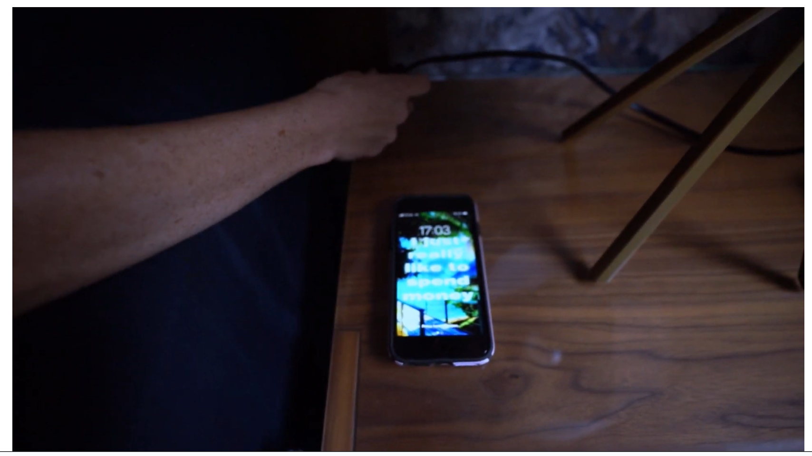

PORTFOLIO
Here are my featured projects in Web Development, Video, and Animation. Click any project to view the full Case Study.




Here are my featured projects in Web Development, Video, and Animation. Click any project to view the full Case Study.